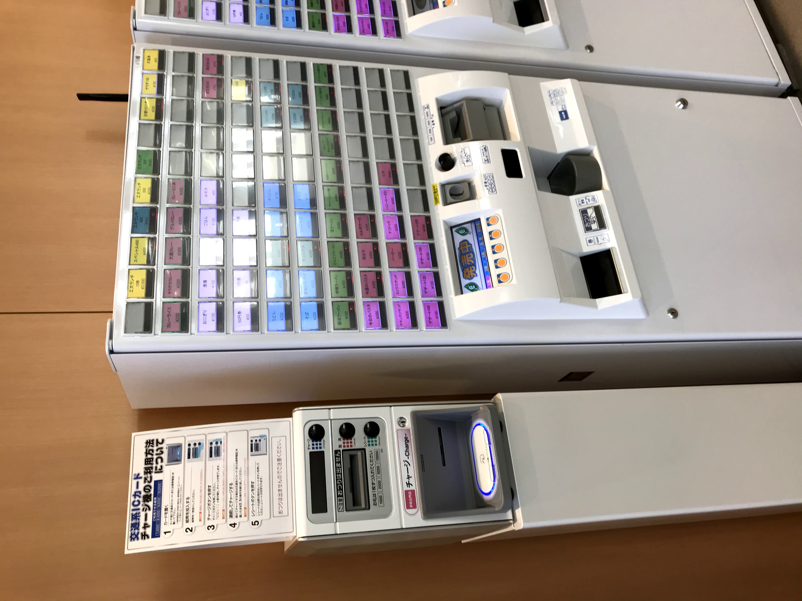

施設の利用方法紹介
学食を購入するまで
まず、学食がある棟（新習志野:13号館、津田沼：3号館)を目指すようにしてください。詳しい場所は、こちらを参照してください。なお、写真は津田沼校舎の3号館です。

学食についたら、写真のような券売機からお好きなメニューの食券を購入するようにしてください。なお、メニューが書かれたボタンを押すと食券が購入できます。津田沼校舎・新習志野校舎共通です。

お好きなメニューの食券を購入し、食堂に入ると、右の写真のような景色が見えます。
食べたいメニューに対応したカウンターに行き、食べ物と入口で購入した食券を交換し、自分の好きな席へ行ってください。なお、各カウンターの上部の緑色の部分に、そのカウンターが何を扱っているかが書かれています。
例えば、「カレーライス」と上部に書かれたカウンターでは、文字通りそこでは「カレー」を受け取ることができます。カレーメニューの食券を頼んだ方はそちらに行くようにしてください。

学食を購入した後
学食を受け取ったら、自分の好きな席に座ってください。ただし、右の写真のような緑色のステッカーが貼ってある席には座らないようにしてください。新型コロナウィルスの対策の一環として、ソーシャルディスタンスを保って楽しいお食事をしましょう。

なお、会話は慎んでいただけますよう、ご協力お願いいたします。

最後にお食事が終わりましたら、必ず、利用した椅子はひきだしたままにして、退出してください。

最後に営業時間ですが、写真のとおりです。お間違えの無いように